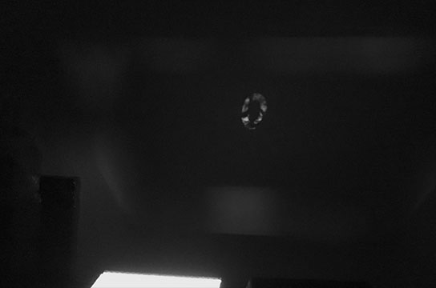
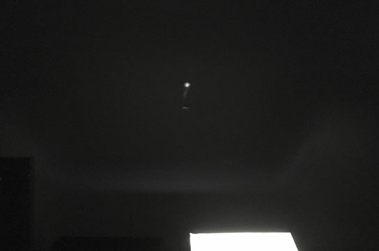
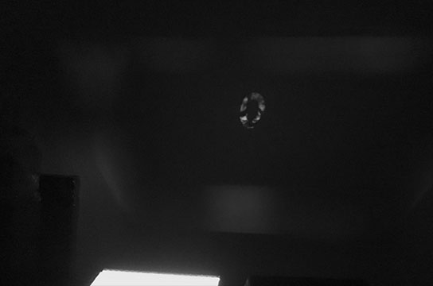
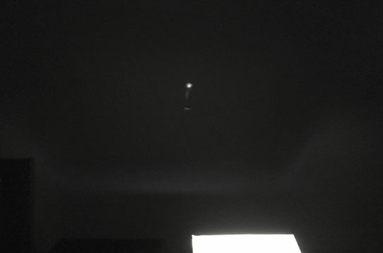

It just started from a silly idea.
There is something in-between dark or light,
but there are not absolutely dark or light in ‘analog world’.
Image projection with analog were controlling the explosion of film or the brightness of the light bulb.
However, when computer appeared, people start to edit films by computer (digitally) and the signals are combined with tons of 0 and 1.
Just want to play with the relationship of analog and digital, and try to minimal the digits to a simple and crude projection.
From analog to digital
There are not absolutely dark or light in reality, it may have different darkness between dark and light.
Thus, I want to try to make light to be on/off situation, to create two ‘digital signal’ analog projector for two images.
It is a little bit similar to the basic of animation, use flashing light to cheat the optical system of humans to make a “fade out” effect.
This is an experiment of analog object and digital feature by using a flicking light box/projector.